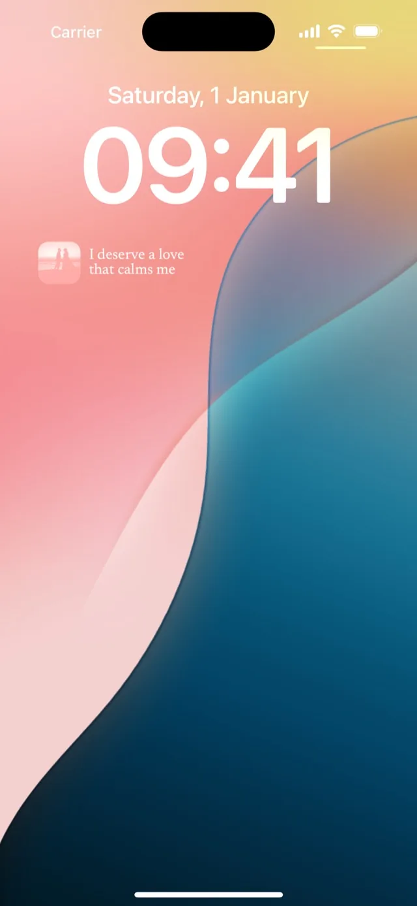

Mira · Guide
A vision board on your Lock Screen
The Lock Screen is the part of your phone you see most without meaning to: every time you check the time, glance at a notification or pick the phone up off a table. That makes it the best place for a vision board, and there are two ways to put one there.
A photo wallpaper fills the screen with pictures. A widget sits under the clock and can carry words. You can use both at once.
The wallpaper: pictures, full screen
Photo Shuffle turns a set of photos into a wallpaper that changes on its own. It is built into iOS, and it is free.
- Wake the phone without unlocking it, then press and hold the Lock Screen.
- Tap the + button to add a new wallpaper, then choose Photo Shuffle.
- Choose the photos for your board. The ••• button sets how often they change: on tap, on lock, hourly or daily.
- Tap Add, and set it as a wallpaper pair if you want the Home Screen to match.
Keep the top third of each photo quiet. The clock sits there, and a busy sky or skyline makes it hard to read.
The widget: a photo and a phrase, under the clock
Mira’s Lock Screen widget shows your board one card at a time, changing on the schedule you set in the app. It comes in three shapes.
- Photo and phrase: a small photo beside two lines of your phrase.
- Photo alone: your photo, in a circle.
- A line of text: the phrase on its own, above the clock.
- Wake the phone without unlocking it, then press and hold the Lock Screen.
- Tap Customise → Lock Screen, then the box under the clock.
- Search for “Mira” and pick a shape: photo and phrase, photo alone, or a line of text.

Wallpaper and widget together
The two don’t compete. Use Photo Shuffle for the big pictures and Mira’s photo-and-phrase widget for the words, and the Lock Screen carries both every time you pick the phone up. When a place is in both, the wallpaper shows it and the widget says why it is there.
Why not a wallpaper with the words written on it
You can put text onto a photo in an editing app and set the result as your wallpaper. It works until you want to change a line, add a photo or see a different one tomorrow, because every change means making the image again. A widget keeps the words apart from the picture, so the board can grow and rotate without any of that.
Put the board where your eyes already go
You don’t need a new habit to look at a Lock Screen; you already do it all day. Put the board there and the looking takes care of itself.

on your iPhone